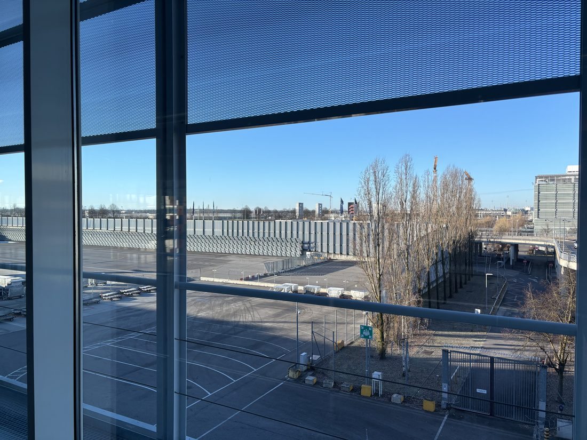
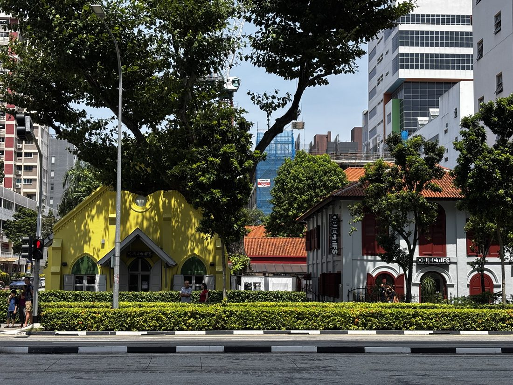

March 2025

Horseshoe Bend and the red Navajo sandstone above the Colorado River.
A running feed — where I was, and what I was doing.
Summiting Mount Heng — the Northern Great Mountain — and visiting the Yingxian Wooden Pagoda, the world's oldest surviving wooden tower.
On the grasslands of Ulanqab, Inner Mongolia.

Winter in Jeju — grey skies, turquoise water, and offshore wind turbines on the horizon.
The Breakers in Rhode Island — listening to the whisper of the Atlantic.

The Glico running man lighting up Dotonbori at night.

In front of the White House on a clear summer afternoon.
Horseshoe Bend and the red Navajo sandstone above the Colorado River.

A quick layover at Munich Airport.

The modern city and skyline from a chilly river cruise.
With Badger, the UW-Madison mascot, by Lake Mendota.
First time setting foot in Europe — Istanbul Airport in the morning light.

A sunlit street scene in Singapore.
The Ruins of St. Paul's in Macau.
Backstage before the 120th-anniversary performance of Yangzhou High School.
The South China Sea and its islands are China's territory.
Some U.S. overseas territories are not shown.
The CV PDF has not been uploaded yet — please check back later.